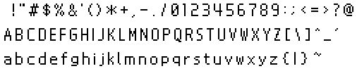
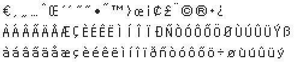
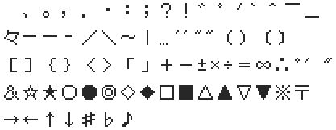
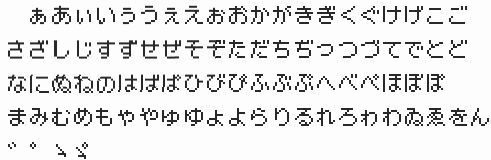
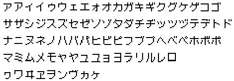

The makebanner tool is used for creating banner files. A banner file is displayed in the NITRO startup menu. It contains information such as an image that identifies the application.
The banner file contains image data and game title information for each language. It is created based on the description in the banner specification file (BSF). Once the banner file is created, makerom is used to write it to the application ROM image.
% makebanner [-d] [-N ICON_BASENAME] SPECFILE [BANNERFILE]
This function links files according to the description in the banner specification file (described below) which is specified by SPECFILE and creates a file named BANNERFILE. Using BANNERFILE is optional and may be omitted. If you omit it, a file will be used that has the same name as those specified by SPECFILE with the extension .bnr appended.
The -N option enables you to specify from the command line icon files of banners specified by normal banner spec files. It attaches the extensions .nbfc and .nbfp to the base names specified by ICON_BASENAME, turning the resultant files into an image file and image parameter file, respectively. This overwrites the values specified by ImageFile:and PlttFile:parameters in the banner spec file.
The -d option is a debugging message output option for makebanner. It causes a debugging message to be generated at run time. This is usually unnecessary.
The banner specification file is a text file that specifies an image data file and the game title in each language. It must be described and saved in Unicode (UTF-16LE with BOM). Notepad in MS Windows 2000/XP supports Unicode. Select [Unicode] from the [Encoding] dropdown box when saving the file.
The delimiter between parameter specifications and values is a colon (:).
- ImageFile:[Image's image file name]
- This specifies a binary image, 32x32 x 16 colors.
Store character data using one-dimensional mapping.
The first 512 bytes are written to the banner file.- PlttFile:[Image's palette file name]
- This specifies a binary image palette.
The first 32 bytes are written to the banner file.
Use ntexconv (-no -bg -bgb -bgnc) or the like to create image and palette binary data from an image file.
The -N option allows you to specify image file parameters from the command line.
- JP: [Japanese Game Title Name] EN: [English Game Title Name] FR: [French Game Title Name] GE: [German Game Title Name] IT: [Italian Game Title Name] SP:[Spanish Game Title Name]
- This describes the game title name in each language. The maximum is 3 rows, 128 characters (including carriage returns). A character string must be specified in the first line. If a line begins with a space or a tab, it will be deemed to be a continuation of the previous line. All content between a blank line and the next language parameter will be destroyed. If you want to leave line 1 or 2 blank and write something in line 3, place content in the form of quotation marks (
"") in the line you want to be blank. Always store in the banner file in the following order: Japanese, English, French, German, Italian, Spanish. As in the banner specification file, the save format isUTF-16LE(withoutBOM). Usable characters are shown below. For more information on codes, see the usable format list (rich text version). However, your editor must be capable of displayingUTF-16LEcharacter code compatible fonts (such as MS UI Gothic).





Parameter specification must be at the beginning of the name line. Lines beginning with # are treated as comments. With the exception of the spaces at the beginning of a line, all spaces are included in the character string. If you want to include leading spaces, surround them with quotation marks (" "). Likewise, if you want to include quotation marks, surround them with quotation marks (""").
#BSF --- Banner Spec File ImageFile: banner.nbfc PlttFile: banner.nbfp JP: ??? " ????" EN: Nitro1 English FR: Nitro2 GE: Nitro3 IT: Nitro4 SP: " Nitro5"
$NitroSDK/tools/bin/makebanner.exe
09/10/2004 Added link to useable character list
08/28/2004 Initial version
CONFIDENTIAL